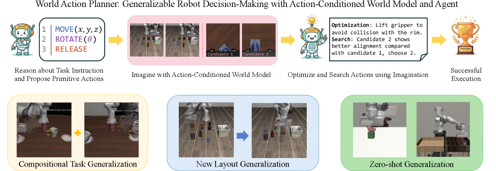
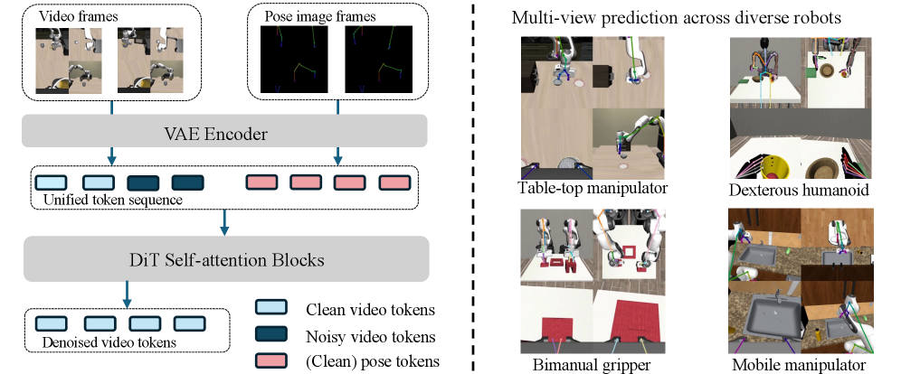

World ModelVLM PlannerPose-Image ConditioningSearch over ImaginationZero-Shot
제출: 2026년 7월 30일 · Harvard SEAS
한 줄 요약 (TL;DR)
VLA/WAM이 학습된 태스크 분포에서만 잘 되는 근본 원인은 정책이 새로운 layout·조합·환경에 일반화된 결정을 못 내리기 때문이라는 관점. 저자들은 (a) pose-image conditioned world model(joint pose를 skeleton 이미지로 렌더해 VAE로 인코딩·비디오 토큰과 concat)로 어떤 embodiment든 조건화하고, (b) 그 위에서 VLM 에이전트가 action을 propose → 상상된 rollout을 optimize/rank하는 3-단계 pipeline을 돌린다. LIBERO-90에서 PSNR +11.4%(in-dist)·+16.8%(gen), compositional PnP에서 π₀.₅ 4% → 72%, zero-shot PickPlaceCan 80%·StackCube 76%.
1배경 · 문제의식
기존 접근은 크게 세 가지 실패 모드가 있다: (1) VLA는 정책 π를 direct로 학습하므로 훈련 분포 밖의 조합/layout에 취약, (2) 기존 WAM은 low-dim action vector를 조건으로 받아 embodiment/카메라 세팅 변화에 민감, (3) VLM planner + VLA 조합은 VLM이 물리 그라운딩 없이 텍스트만 다루므로 실제 결과와 어긋난다.
저자들의 관점: World Model 자체를 planner의 시뮬레이터로 쓸 수 있으면, VLM이 여러 action을 propose하고 world model이 imagined outcome을 뱉는 plan-in-imagination이 성립한다. 관건은 (i) world model이 조작 그라운딩이 되면서 (ii) VLM이 조건화할 수 있는 형태여야 한다는 것.
2핵심 Contribution
Pose-Image Conditioned World Model — action을 raw joint vector로 넘기지 않고, forward kinematics로 미래 joint를 계산해 스켈레톤 이미지로 렌더한 뒤 비디오 VAE로 인코딩, 비디오 토큰과 concat. embodiment·카메라 세팅에 자연스럽게 강건.
3단계 World Action Planner 파이프라인 — (1) VLM Agent가 후보 action을 propose, (2) Agent 피드백으로 상상 궤적을 global optimize, (3) 여러 후보를 local search + agent ranking으로 정렬. 정책 자체는 modular tool로 붙일 수 있다.
Compositional · Layout · Zero-Shot 대폭 향상 — Compositional PnP에서 π₀.₅ 4%→72%, 신규 layout PnP 평균 88%대, zero-shot manipulation(PickPlaceCan 80%, StackCube 76%)까지 학습 없이 달성.
3Method
Pose-Image Conditioning
동일한 joint config라도 embodiment·카메라 세팅이 다르면 raw action vector의 의미가 달라진다. 저자들은 조건화 시점에 forward kinematics로 미래 pose 시퀀스를 렌더해 이미지로 만든다. 이 이미지를 비디오 모델의 VAE로 인코딩하면 비디오 토큰과 같은 임베딩 공간에서 concat 가능. 학습은 diffusion-forcing + flow-matching 목적.
World Action Planner (3-stage)
Stage 1
Agent Action Proposal — VLM이 태스크 지시를 보고 여러 candidate action(대략적 waypoint·gripper 이벤트 등)을 propose.
Stage 2
Global Optimization via Imagination — 각 candidate를 pose-image world model에 조건화해 rollout을 상상. VLM이 상상된 비디오를 보고 objective와의 alignment를 점수화. 이 score를 loss로 삼아 action seq를 gradient 없이 refine.
Stage 3
Local Search + Agent Ranking — 정렬된 상위 후보에 대해 국소 perturbation으로 살짝 흔들어 다시 rank, 최종 pose 시퀀스를 결정. 실제 로봇에서는 tracking controller 또는 학습된 modular policy(π₀.₅ 등)를 tool로 호출.
왜 이게 일반화되는가
정책이 학습한 태스크 분포가 아니라, world model이 학습한 물리·시각적 그라운딩에 의존해서 결정을 내리기 때문. VLM이 짜는 action이 이상해도 imagined rollout이 실패를 시각적으로 보여주면 다음 iteration에서 걸러진다.
4실험 결과
Action-Conditioned World Modeling 품질 (표 1)
세팅
PSNR ↑
LPIPS ↓
개선폭
LIBERO-90
17.02
0.286
+9.4%
LIBERO-Spatial
16.75
0.322
+8.1%
In-distribution 평균
—
—
+11.4%
Generalization 평균
—
—
+16.8%
pose-image conditioning이 raw action vector 조건화 대비 특히 일반화 조건에서 이득이 크다.
Compositional 태스크 (표 3)
Task
π₀.₅
WAP (Ours)
PnP Alphabet Soup & Tomato
4
72
PnP White Mug & Yellow Mug
0
68
여러 물체를 순차적으로 집어 넣는 조합 태스크에서 정책 기반 baseline이 사실상 실패하는 반면, imagination-guided planner는 안정적 성공.
New Layout Generalization (표 4)
Task
Success
PnP Alphabet Soup
88
PnP Salad Dressing
90
훈련 layout과 다른 배치에서도 평균 88%대. 정책이 아니라 imagined outcome을 optimize하기 때문에 layout 변화에 강건.
Zero-Shot (표 5)
Task
Success
PickPlaceCan
80
StackCube
76
해당 태스크에 특화된 학습 없이도 70~80%대. VLM+world model만으로 zero-shot planning 성립을 보임.
5Ablation / 관찰
Pose-image 조건화가 raw action 조건화 대비 특히 embodiment·카메라 세팅이 학습과 다를 때 격차가 크다.
Agent proposal만(local search 없음) 또는 proposal 없이 local search만 돌리면 성능이 크게 떨어짐 — 3단계 모두가 필요.
World model rollout 품질이 planner 성능의 상한을 결정. 저품질 world model은 잘못된 imagined outcome을 만들어 잘못된 action을 선택하게 만든다.
6핵심 Figure / Table

Figure 1 — 시스템 개요. VLM 에이전트가 action을 propose → pose-image world model이 imagined rollout을 뱉음 → 에이전트가 그 결과를 rank·refine. 실제 로봇 policy는 tool로 호출. (출처: arXiv:2607.27599)

Figure 2 — Pose-image conditioning. forward kinematics로 렌더한 skeleton 이미지를 비디오 VAE로 인코딩 후 비디오 토큰과 concat, diffusion-forcing + flow-matching으로 학습. (출처: arXiv:2607.27599)
Table 3이 핵심: compositional PnP에서 π₀.₅ 4%→72%·0%→68%. 정책 기반 접근이 실질적으로 실패하는 조합 태스크에서 imagination 기반 planner가 압도적으로 유리하다는 증거.